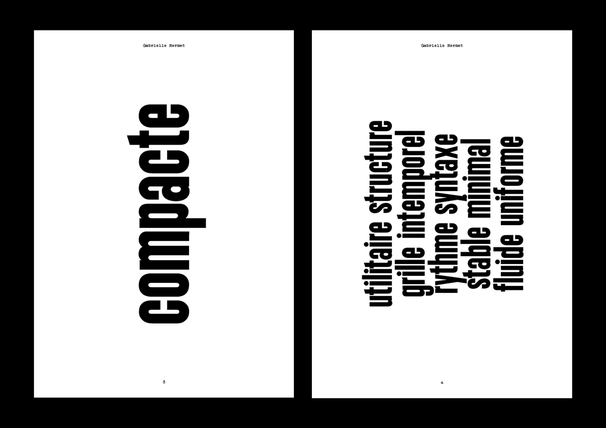
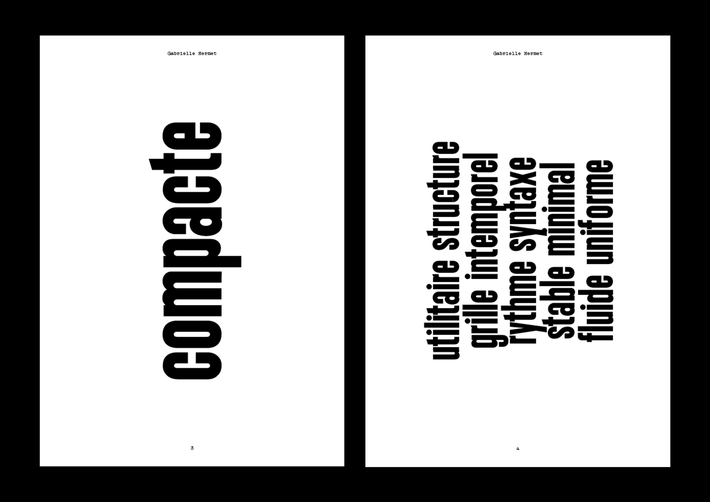
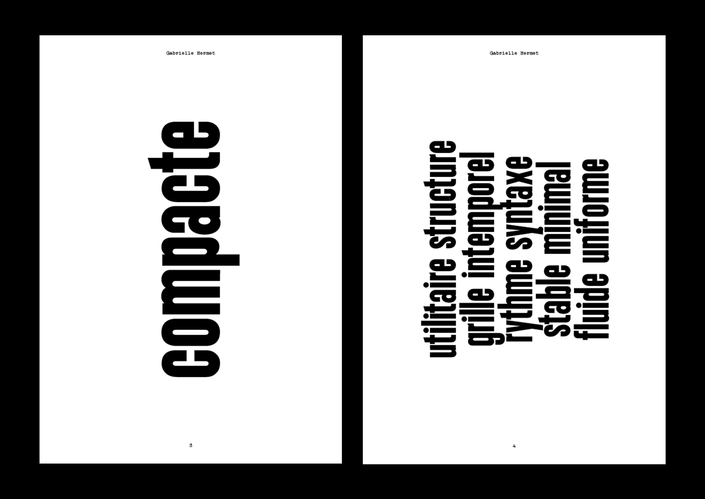

| Projet | Vaganay |
| Année | 2025 |
| Support | Typographie |
| Dimensions | Multiples |
| Façonnage | Glyphs |
| Conception graphique | Gabrielle Hermet |
Retravaillée à partir d’une des plaques émaillées présentes à l’ESAD d’Amiens, cette typographie a été conçue pour le corps de texte plutôt que pour le titrage. Elle ne comporte que des bas-de-casse et reprend les courbes et les lignes de la plaque émaillée. Condensée, épaisse et élancée, elle convient parfaitement aux textes importants et se distingue par sa graisse. Un spécimen typographique a ensuite été réalisé à plusieurs, chacun présentant sa propre version de la typographie et le travail effectué à partir de seulement quelques lettres. Il a fallu les imaginer, les dessiner et les vectoriser avant d’arriver à ce résultat. Cette police est téléchargeable en Open Source.
